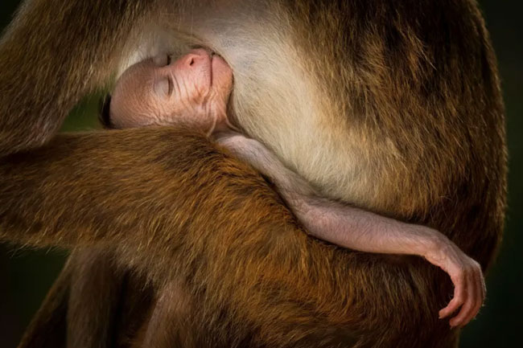
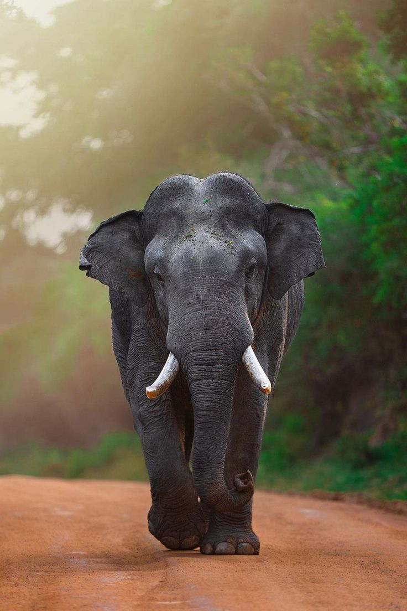
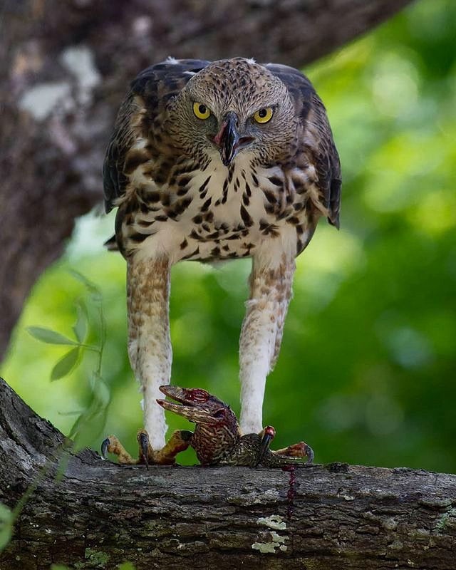

Welcome to the untamed realm of Sri Lanka's wilderness - a rich and vibrant land where nature reigns supreme and every corner holds a story waiting to be discovered. Nestled in the heart of the Indian Ocean, Sri Lanka is not just a tropical paradise for beach lovers, but also a sanctuary for some of the most remarkable and diverse wildlife in the world. From the stealthy Sri Lankan leopard, the top predator of Yala and Wilpattu National Parks, to the mighty Asian elephants that travel in herds through lush forests and grassy plains, this island offers a unique wildlife experience that blends adventure with serenity. The Sinharaja Rainforest, a UNESCO World Heritage Site, echoes with the calls of exotic birds and the rustle of ancient trees, housing endemic species found nowhere else on earth. Watch the skies for majestic eagles soaring above the treetops, while colorful birds like the yellow-fronted barbet and paradise flycatcher add splashes of brilliance to the forest canopy. In the undergrowth, reptiles such as the venomous katussa (viper) and elusive latussa (monitor lizard) move silently, keeping the island's ecosystem in balance. The monkeys of Sri Lanka, from the grey langur to the toque macaque, bring energy and charm to both jungles and ancient temple sites, while rivers and lakes hide a world of crocodiles, amphibians, and freshwater fish. Every province offers a new landscape-from misty mountain trails to dry zone shrublands, each with its own signature species and seasonal wonders. Whether you are a wildlife photographer, conservationist, traveler, or simply curious, this page is your gateway to learning more about the wild creatures and protected habitats of Sri Lanka. Discover the stories behind each animal, understand the delicate balance of nature, and see why this small island is considered one of the world's biodiversity hotspots.

The elusive king of Sri Lanka's wildThe Sri Lankan leopard (Panthera pardus kotiya) is a majestic and endangered big cat found only in Sri Lanka. As the island's top predator, it plays a vital role in maintaining ecological balance. These leopards are known for their golden coats marked with dark rosettes, strong build, and graceful movements through forests and grasslands. They are most commonly seen in Yala, Wilpattu, and Kumana National Parks, where they silently roam in search of prey. Despite their beauty, Sri Lankan leopards face threats from habitat loss, poaching, and human conflict. Conservation efforts are underway to protect this iconic species and ensure its survival for generations to come. Explore the wild heart of Sri Lanka and witness the rare beauty of the leopard in its natural home. |

Playful spirits of the jungleSri Lanka is home to several unique monkey species that swing through the treetops of rainforests, dry zones, and sacred temples. From the lively Toque macaque (endemic to Sri Lanka) with its distinct "cap-like" hair, to the graceful Purple-faced langur found in misty hill forests, these primates are an essential part of the island's wildlife. Often seen in national parks, villages, and heritage sites, monkeys bring energy and charm to the landscape. However, their survival is challenged by urbanization and habitat loss. These intelligent creatures are protected by law and play a crucial role in forest ecosystems. Watch them leap, groom, and chatter - a true glimpse into the social life of Sri Lanka's wild. |

Gentle giants of the wildThe Sri Lankan elephant (Elephas maximus maximus) is the largest subspecies of the Asian elephant and a national treasure. These majestic creatures roam freely through lush forests, grasslands, and protected parks like Minneriya, Udawalawe, and Yala. Known for their intelligence, strong family bonds, and cultural importance, elephants are deeply woven into Sri Lanka's heritage. They are also a major highlight for wildlife enthusiasts, especially during the famous "Gathering of Elephants" at Minneriya - one of the largest wild elephant gatherings in Asia. Despite their revered status, Sri Lankan elephants face serious threats from habitat loss and human-elephant conflict. Conservation efforts aim to protect these gentle giants and ensure their place in the wild for generations to come. |

Masters of the skySri Lanka is home to several unique monkey species that swing through the treetops of rainforests, dry zones, and sacred temples. From the lively Toque macaque (endemic to Sri Lanka) with its distinct "cap-like" hair, to the graceful Purple-faced langur found in misty hill forests, these primates are an essential part of the island's wildlife. Often seen in national parks, villages, and heritage sites, monkeys bring energy and charm to the landscape. However, their survival is challenged by urbanization and habitat loss. These intelligent creatures are protected by law and play a crucial role in forest ecosystems. Watch them leap, groom, and chatter - a true glimpse into the social life of Sri Lanka's wild. |
.jpg)
Mysterious guardians of the wildSri Lanka is a hotspot for snake diversity, with over 100 recorded species, including five deadly venomous types. From the dazzling Green Pit Viper and the massive Indian Rock Python, to the feared Russell's Viper and Indian Cobra, these reptiles are both fascinating and vital to the island's ecosystems. While some snakes are venomous, the majority are harmless and avoid human interaction. They help maintain natural balance by controlling pests and small animals. Many are also found in forests, wetlands, paddy fields, and even temple grounds. With their silent movements and striking patterns, snakes add a mysterious beauty to Sri Lanka’s biodiversity. Respecting and understanding them is key to peaceful coexistence. |

Bright jewels of the treetopsSri Lanka's forests and gardens are home to several stunning yellow-colored birds that add a splash of sunshine to the landscape. Among them, the Black-hooded Oriole is a true standout - with its vivid yellow body and striking black head, often heard before it's seen with its sweet fluting call. Other yellow-hued beauties include the Common Iora, known for its soft melodies and energetic movement through the branches, and the Golden-fronted Leafbird, often found in wooded areas feeding on nectar and fruit. These birds not only brighten up the island's greenery but also play important roles in pollination and pest control. Spotting one is a delightful reward for any birdwatcher exploring Sri Lanka's natural wonders. |

The secretive night wandererThe Common Palm Civet, locally known as Katussa, is a small, tree-dwelling mammal native to Sri Lanka's forests and plantations. Mostly active at night, these shy creatures have a cat-like body with a long tail and a keen sense of smell. Katussas are omnivores, feeding on fruits, insects, small animals, and sometimes nectar. They play an important role in seed dispersal, helping to maintain healthy forest ecosystems. Though rarely seen during the day, Katussas are a vital part of Sri Lanka's nocturnal wildlife, quietly moving through the trees and adding to the island's rich biodiversity.. |